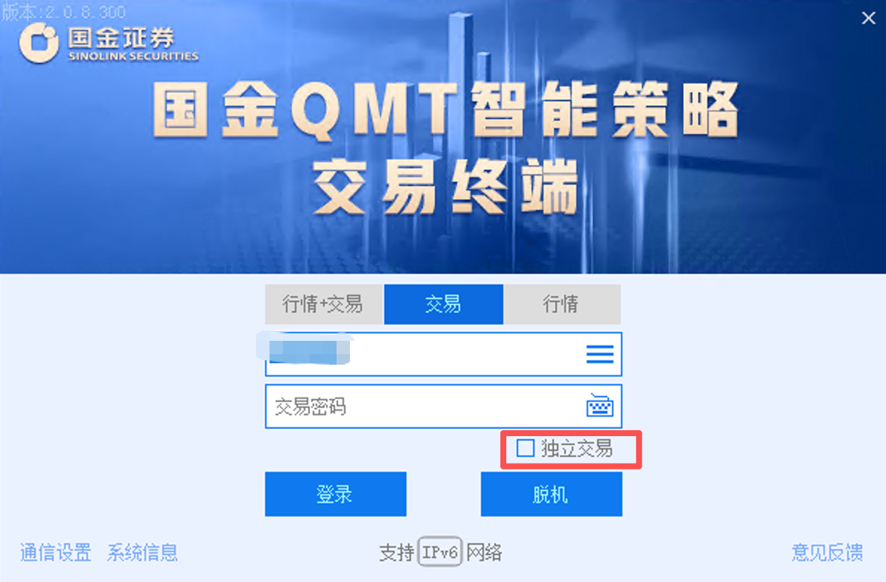
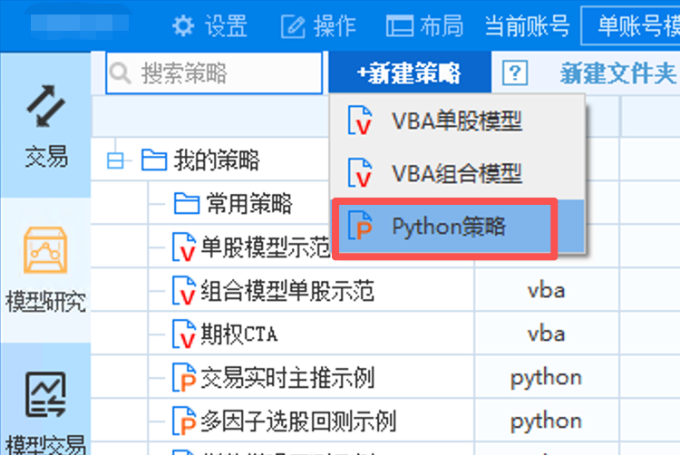
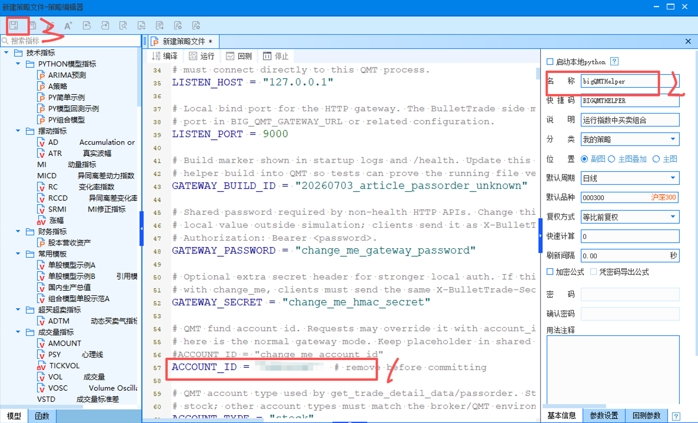
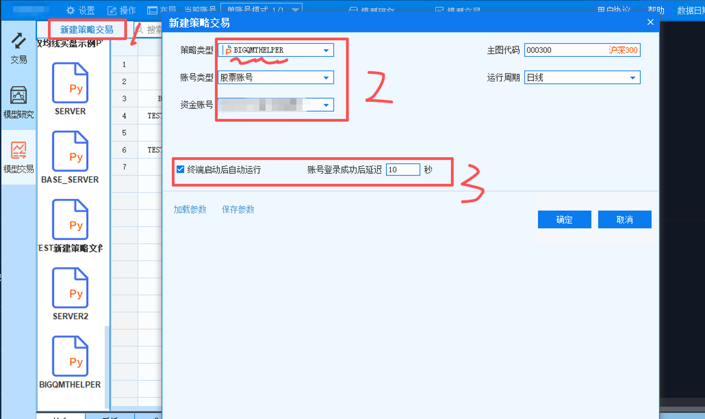
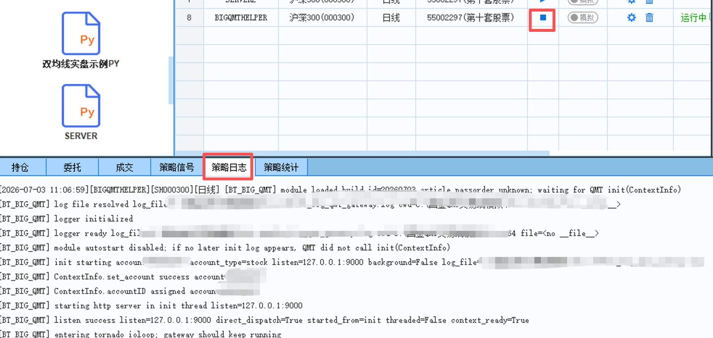
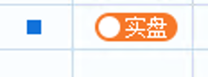

大 QMT 服务向导¶
这页说明如何在大 QMT 里运行 BulletTrade helper，并启动兼容原 qmt-remote 的 bullet-trade server。
适用场景：券商不再提供 MiniQMT，或者 MiniQMT 不能继续作为数据和交易网关时，用大 QMT 的策略运行环境承接行情、账户、持仓、委托、成交和下单撤单能力。
如果你的券商仍然提供 MiniQMT/xtquant，并且可以正常访问 userdata_mini，优先看 QMT server（MiniQMT 后端）。本页只讲大 QMT helper 后端。
小 QMT 和大 QMT 的关系¶
从底层能力看，小 QMT 和大 QMT 是两种不同的数据/交易后端：
| 维度 | 小 QMT / MiniQMT | 大 QMT |
|---|---|---|
| 本地直连数据源 | DEFAULT_DATA_PROVIDER=qmt |
不提供本地直连 provider |
| 本地直连交易通道 | DEFAULT_BROKER=qmt |
不直接作为 broker 使用 |
| server 后端 | --server-type qmt |
--server-type big_qmt |
| 依赖 | xtquant / userdata_mini |
大 QMT 策略环境里的 ContextInfo 和内置函数 |
| 客户端访问 | 可直连 qmt，也可通过 qmt-remote |
通过 qmt-remote |
所以文档里看到的 qmt-remote 不是说小 QMT 和大 QMT 是同一个数据源，而是说它们都可以被包装成同一套远程协议。上层策略为了兼容，统一连 58620 的 qmt-remote；底层 server 再决定实际使用 MiniQMT 后端还是大 QMT 后端。
大 QMT 只替换底层 QMT 网关，不限定上层策略运行方式。BulletTrade 原来的两种使用路线都支持：
- 方案 A：策略直接用
bullet-trade live独立运行，连接qmt-remote。 - 方案 B：策略在聚宽模拟盘等远程环境运行，通过 BulletTrade helper 调用本地
qmt-remote服务。
1. 架构先看清¶
大 QMT 方案分两层：
大 QMT 策略进程
运行 helpers/big_qmt_gateway_strategy_sample.py
监听本机 127.0.0.1:9000
|
v
bullet-trade server --server-type big_qmt
连接大 QMT helper
对外监听 58620
|
v
策略 / AIStocks V2 / bullet-trade live
仍然使用 qmt-remote 连接 58620
注意：
9000是大 QMT helper 的本机 HTTP 端口，只给同一台机器上的bullet-trade server使用。58620才是 BulletTrade 对外提供的 qmt server 端口。- 上层策略仍然配置
qmt-remote，不需要直接知道底层是 MiniQMT 还是大 QMT。 - 方案 A 的本地 live 和方案 B 的聚宽远程调用都走同一个
58620qmt server。
2. 登录大 QMT¶
先正常登录大 QMT 交易端。

要点：
- 确认登录的是要提供数据和交易能力的资金账号。
- 登录后保持大 QMT 运行，helper 服务依赖这个进程。
3. 新建 Python 策略¶
在大 QMT 左侧策略区新建 Python 策略。

建议策略名称使用容易识别的名字，例如：
BIGQMTHELPER
4. 粘贴 helper 并修改顶部参数¶
把仓库里的 helper 文件内容复制到大 QMT 策略编辑器：
helpers/big_qmt_gateway_strategy_sample.py
保存前先检查顶部参数。 由于我们是监听的本机端口，实际上也没有什么太多的安全隐患，但是记得把 ACCOUNT_ID 改了。

常用参数：
| 参数 | 说明 | 建议 |
|---|---|---|
LISTEN_HOST |
大 QMT helper 监听地址 | 默认 127.0.0.1 |
LISTEN_PORT |
大 QMT helper 监听端口 | 默认 9000 |
GATEWAY_BUILD_ID |
启动日志和 /health 里的版本标识 |
每次升级 helper 后更新 |
GATEWAY_PASSWORD |
BulletTrade 访问 helper 的密码 | 必须改成私有值，并和 server 侧一致 |
GATEWAY_SECRET |
可选增强认证密钥 | 可先保留默认，正式环境建议改 |
ACCOUNT_ID |
QMT 资金账号 | 改成当前大 QMT 登录账号 |
ACCOUNT_TYPE |
账户类型 | 股票账户用 stock |
AUTO_ENSURE_HISTORY_CACHE |
data.history 是否先触发历史行情下载 |
默认 True，对齐 MiniQMT |
HISTORY_FAIL_ON_ENSURE_CACHE_ERROR |
自动下载失败时是否直接返回错误 | 默认 True，避免读取旧缓存或空数据 |
INDEX_WEIGHT_DOWNLOAD_BEFORE_READ |
指数成分读取前是否先下载指数权重 | 默认 True，优先对齐 MiniQMT 成分股口径 |
ENABLE_TRADING |
是否允许下单 | 仿真测试可设 True，只读验证设 False |
ENABLE_CANCEL_ORDER |
是否允许按订单号撤单 | 需要撤单时设 True |
RUN_HTTP_IN_BACKGROUND_THREAD |
是否后台线程运行 HTTP | 默认按 helper 注释使用，不要随意改 |
AUTO_START_HTTP_ON_MODULE_LOAD |
模块加载时是否自启动 HTTP | 正式运行通常保持 False |
LOG_DIR / LOG_FILE_NAME |
helper 日志位置 | 默认即可，排查时看日志 |
特别注意：
- 文件头保持
#encoding:gbk。 - 复制到开源仓库或提交前，不要保留真实资金账号、密码和密钥。
- 大 QMT 内置 Python 较老，helper 已按大 QMT 白名单库控制依赖，不要额外加第三方库。
5. 新建策略交易运行项¶
回到模型交易区，新建策略交易，选择刚才保存的 Python 策略。

建议配置：
- 策略类型：选择刚才的 helper 策略。
- 账号类型：股票账户。
- 资金账号：选择当前要提供服务的 QMT 资金账号。
- 主图代码：可以用
000300。 - 运行周期：日线即可。
- 勾选“终端启动后自动运行”。
不要勾选“启动本地 Python”。如果勾选后大 QMT 只加载模块，不调用 init(ContextInfo)，helper 可能不会真正拿到 QMT 上下文。
6. 启动 helper 服务¶
启动刚才创建的策略交易运行项，然后查看“策略日志”。

正常启动时应看到类似日志：
[BT_BIG_QMT] init starting account=...
[BT_BIG_QMT] ContextInfo.set_account success account=...
[BT_BIG_QMT] listen success listen=127.0.0.1:9000
[BT_BIG_QMT] entering tornado ioloop; gateway should keep running
如果只看到 module loaded 后策略结束，通常说明这个运行方式没有调用 init(ContextInfo)，优先检查是否勾选了“启动本地 Python”，以及是否是从策略交易运行项启动。
7. 启动 bullet-trade server¶
大 QMT helper 启动后，在同一台 Windows 机器上启动 bullet-trade server。
示例 .env.bigqmt：
QMT_SERVER_TOKEN=change_me_server_token
BIG_QMT_GATEWAY_URL=http://127.0.0.1:9000
BIG_QMT_GATEWAY_PASSWORD=change_me_gateway_password
BIG_QMT_GATEWAY_TIMEOUT_SECONDS=30
BIG_QMT_ENABLE_TRADING=true
BIG_QMT_ENABLE_CANCEL_ORDER=true
启动命令：
bullet-trade --env-file .env.bigqmt server --server-type big_qmt --listen 0.0.0.0 --port 58620 --enable-data --enable-broker
说明：
--server-type big_qmt表示后端连接大 QMT helper。BIG_QMT_GATEWAY_URL指向大 QMT helper 的9000端口。QMT_SERVER_TOKEN是上层策略连接58620时使用的 token。BIG_QMT_GATEWAY_PASSWORD必须和 helper 顶部的GATEWAY_PASSWORD一致。BIG_QMT_ENABLE_TRADING=false时只提供数据和账户查询，不允许下单。
8. 策略侧仍使用 qmt-remote¶
上层策略、AIStocks V2 或其他客户端仍然连接 bullet-trade server 的 58620。
这意味着大 QMT 后端对上层是透明的：
- 方案 A：策略直接在本机或服务器上运行
bullet-trade live，配置DEFAULT_DATA_PROVIDER=qmt-remote和DEFAULT_BROKER=qmt-remote。 - 方案 B：策略在聚宽模拟盘运行，使用
helpers/bullet_trade_jq_remote_helper.py或聚宽接管方案，最终也是调用同一个58620qmt server。
客户端 .env 示例：
DEFAULT_DATA_PROVIDER=qmt-remote
DEFAULT_BROKER=qmt-remote
QMT_SERVER_HOST=127.0.0.1
QMT_SERVER_PORT=58620
QMT_SERVER_TOKEN=change_me_server_token
运行：
bullet-trade live strategies/demo_strategy.py --broker qmt-remote
如果是 AIStocks V2，中间网关也继续连接 58620，不直接连大 QMT helper 的 9000。
启动 live 前确认模拟/实盘开关。

9. 最小验收清单¶
部署后至少检查这些接口：
health：确认backend_type=big_qmt，并看到 helper 的GATEWAY_BUILD_ID。data.trade_days：返回日期应兼容 MiniQMT，例如2026-06-29 00:00:00。data.current_tick：能获取当前行情。data.history：能获取日线和分钟线。broker.account：能获取账户资金。broker.positions：能获取持仓。broker.orders：能获取委托。broker.trades：能获取成交。- 仿真环境下测试限价单、市价单、撤单、订单备注和虚拟子账户过滤。
10. MiniQMT 对齐口径¶
大 QMT helper 和 --server-type big_qmt 的目标是对上层继续提供 MiniQMT 兼容的 qmt-remote 协议。关键数据接口按下面口径处理：
data.history：默认先调用大 QMT 内置download_history_data，再调用get_market_data_ex读取本地行情。调用方只有在明确诊断缓存问题时才建议传auto_download=false。data.current_tick：保留当前价接口，返回结构与快照保持一致，至少包含sid、last_price、dt。data.security_info：返回聚宽风格code和 QMT 风格qmt_code，同时补齐display_name、name、start_date、end_date、type、subtype、parent。data.get_index_stocks：优先使用download_index_weight/get_index_weight获取指数权重成分；如果当前大 QMT 环境不支持，再回退到板块列表。data.trade_days：输出日期保持 MiniQMT 兼容格式，避免不同后端返回纯数字日期导致上层对比失败。
这几个接口都应该通过 58620 的 qmt-remote 服务访问，不要让策略直接调用 9000 helper。
11. 常见问题¶
为什么 helper 日志里显示启动后又停止¶
如果日志只有：
module loaded
module autostart disabled
但没有 init starting，说明大 QMT 没有调用策略生命周期里的 init(ContextInfo)。优先确认：
- 不是只在编辑器里运行代码。
- 是从“策略交易”运行项启动。
- 没有勾选“启动本地 Python”。
为什么 9000 能通，但策略不能连¶
策略不应该连接 9000。策略和上层网关应该连接 bullet-trade server 的 58620。
为什么下单报权限或不可用¶
检查两层开关：
- helper 顶部
ENABLE_TRADING=True - server 侧
.env.bigqmt里BIG_QMT_ENABLE_TRADING=true
撤单同理检查：
- helper 顶部
ENABLE_CANCEL_ORDER=True - server 侧
.env.bigqmt里BIG_QMT_ENABLE_CANCEL_ORDER=true
为什么密码不匹配¶
GATEWAY_PASSWORD 和 BIG_QMT_GATEWAY_PASSWORD 是一对，必须一致。QMT_SERVER_TOKEN 是另一层 token，给 qmt-remote 客户端连接 58620 使用。
大 QMT 和 MiniQMT 的接口是否完全一样¶
上层尽量保持同一套 qmt-remote 协议。大 QMT 后端负责把大 QMT helper 返回值归一化成 MiniQMT 兼容口径，例如日期格式、行情字段、复权数据、订单和成交结构。
新增能力应优先放在大 QMT adapter/helper 内，不应为了大 QMT 随意修改策略引擎。
大 QMT 的历史数据是否也需要下载¶
需要。正式口径和 MiniQMT 一样：先确保本地缓存，再读取历史行情。AUTO_ENSURE_HISTORY_CACHE=True 时，helper 会在 data.history 里自动调用下载函数；如果下载失败且 HISTORY_FAIL_ON_ENSURE_CACHE_ERROR=True，接口会返回错误，而不是继续读可能不完整的数据。